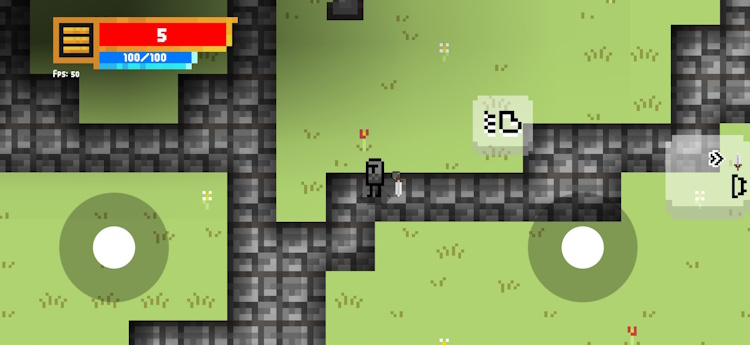
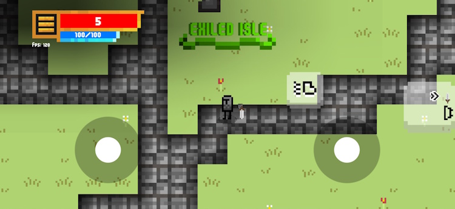
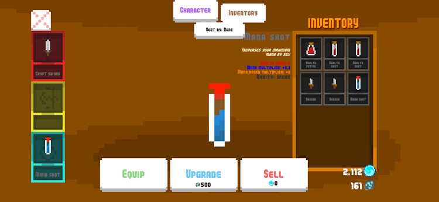
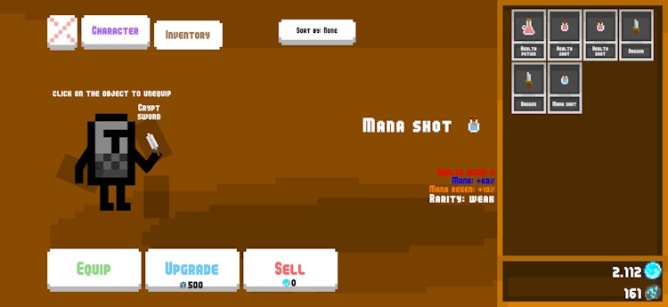
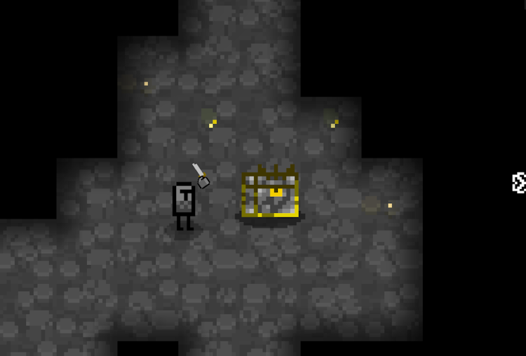
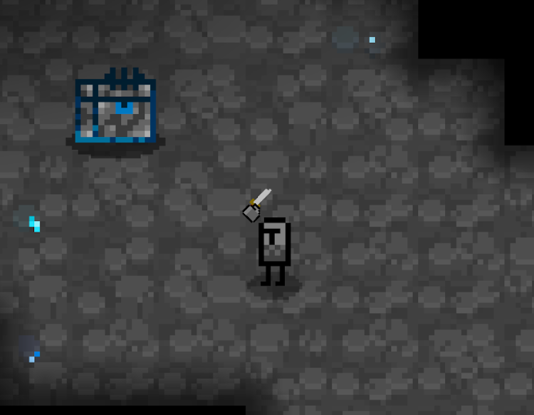
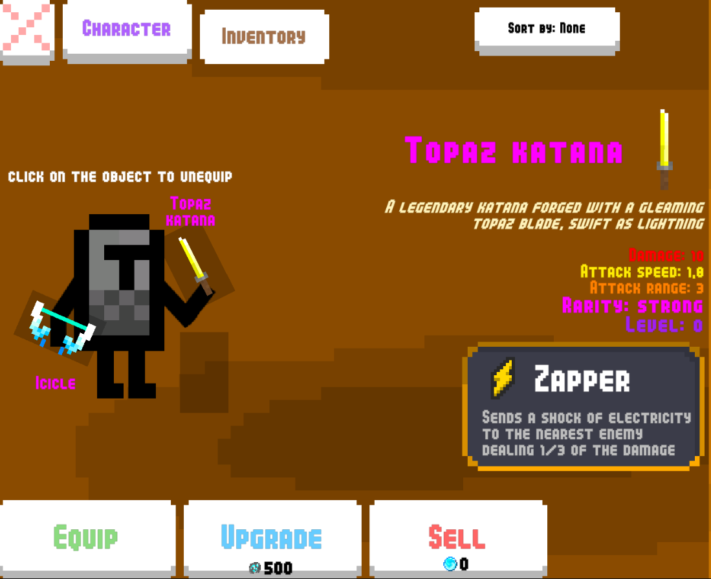
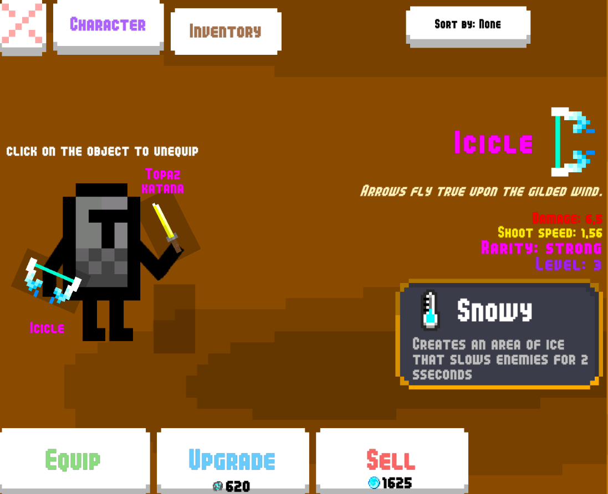

News
The first thing I changed in this update was the tiles, they were all WRONG
but only on the second floor
Then I got rid of some of my terrible old code that had been
rotting in this game since the stone age and did some optimizations here and there
One nice change was that I finally understood how to target the framerate
depending on the device's refresh rate, so now your 120Hz phone outputs 120fps
when it can
basically always
but only when certain conditions are met
I think
I noticed the two sticks were asymmetrical
I let my eyes finish bleeding and got to fixing that terrible UI
now your fingers may rest at ease


A fellow player pointed out that the dungeons are kinda empty
so now the dungeons are kinda less empty
I increased the graces spawn rate a lot, increased the enemy spawn rate and even the chests a little bit
some areas are emptier and some are less... empty, with areas where monsters are more present
The biggest change by far is the items and inventory
I changed the inventory UI yet again and I think I've settled on a design I like
I also changed the ground items, made a little display for them and now you have to click on the item to pick it up
so you don't need to run into enemies anymore to pick up an item


But I also rebalanced the potions, they are much more powerful now and have new textures
Last but not least, I added 2 new biomes to the second floor, the Topaz and Sapphire caves


The new drops are:
the Topaz Katana

and the Icicle

good luck finding 'em